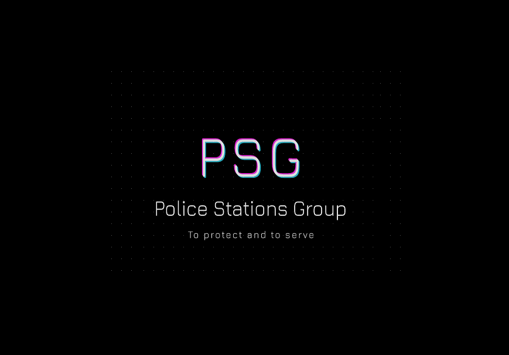

¿Quienes somos?
Somos la PSG. Una crew de SA:MP con el propósito de interpretar el Departamento de Policía en servidores Roleplay basándose en protocolos y procedimientos reales del cuerpo policial de Estados Unidos. Contamos con personal de variadas localizaciones del mundo, fieles a su papel y con nivel de rol puro, la seriedad y compromiso están siempre presente en cada uno de ellos.
Dentro del departamento hay una gran variedad de divisiones, rangos y procedimientos, los mismos desempeñan sus propias funciones. Nos mantenemos siempre en constantes actualizaciones para mejorar cada día más la experiencia de juego para todos los usuarios en general.

"Los hombres rudos crean buenos tiempos, los debiles los desgastan" ─ Ryan Bonklitz ─